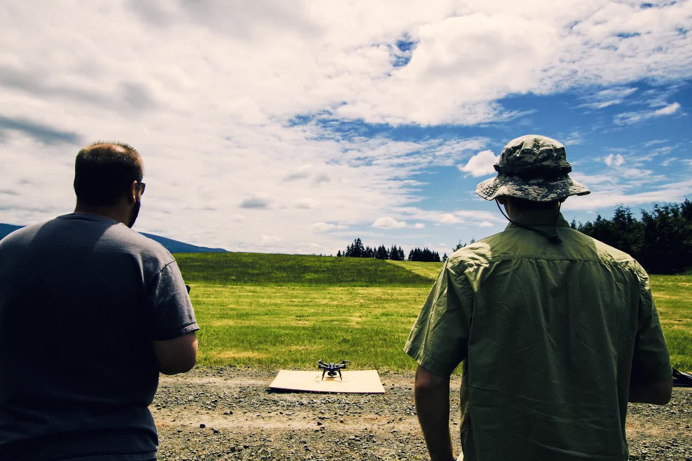
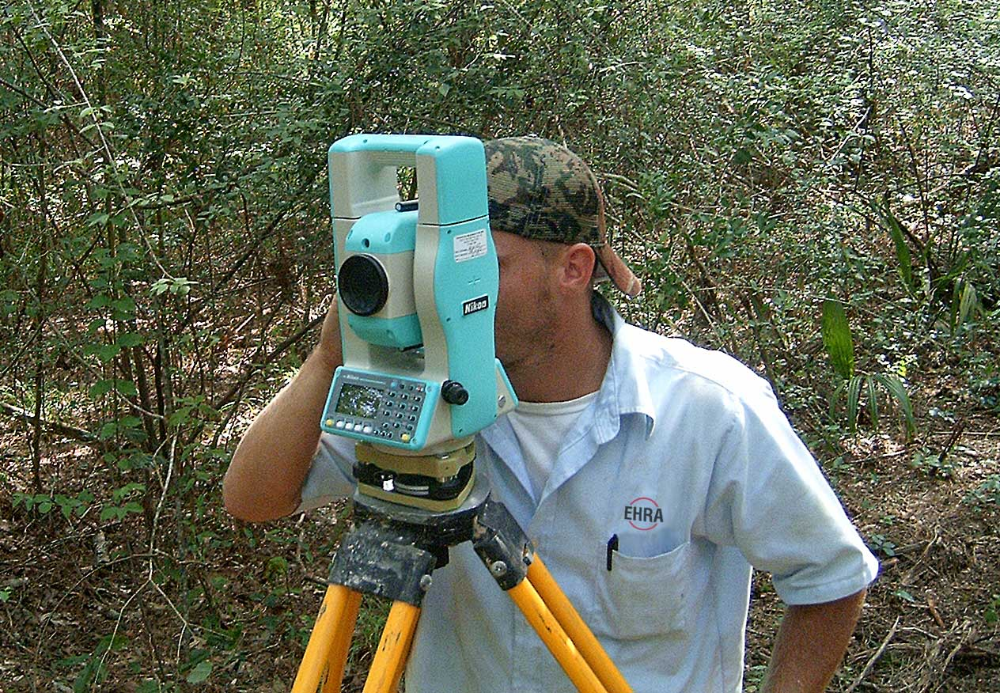
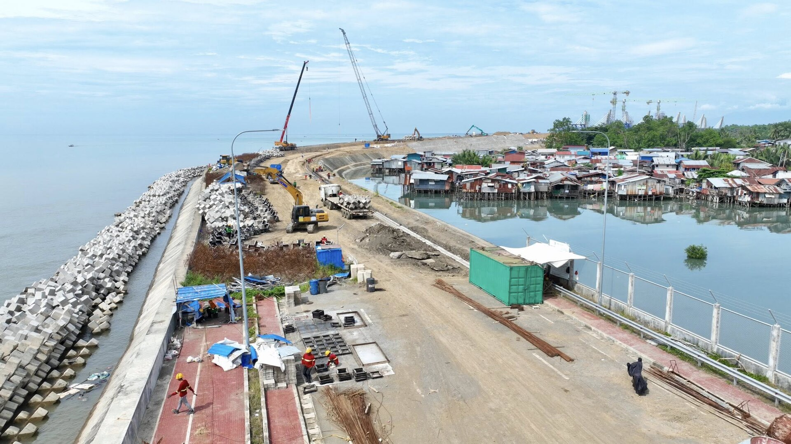

Under the canopy
Multi-target returns are the whole argument for waveform LiDAR. Here is what the second and third returns actually looked like over a forested corridor.
14 July 2026 · Drone Vision Pro

Thirty kilometres of alignment, one weather window, and a LiDAR sensor that has to see the ground through the cane. How the corridor got measured.
The six-point calibration routine that stops a base-and-rover pair drifting halfway through a job.
Tide gauges, sound velocity, and why a survey boat is the slowest fast thing you will ever hire.
Four things a geodetic engineer looks for before signing, and three that will send it back.
Updated weekly · 3 desks contributing

Multi-target returns are the whole argument for waveform LiDAR. Here is what the second and third returns actually looked like over a forested corridor.

On a large build, everyone brings their own control. Reconciling six networks to PRS92 before anyone pours concrete.

Hydrographic survey runs on the moon's schedule, not yours. Planning a bathymetric window around spring tides.
The bottleneck is production, not ideas
Nothing here is extra work. This is what comes off the truck after any normal job.
Permanent entry on the register. Wins the next bid.
The long read. Ranks in search for years.
B2B audience. Where the buyers actually are.
60 seconds cut from footage you already shot.
Positions the firm as the one that teaches.
Sells the gear without a sales post.
Straight into recurring clients' inboxes.
Drops into the next prequalification pack.
Young geodetic engineers want to see the work.
Ron and Jimbo currently plan weekly and are blocked on video editing time — so posts repeat and engagement falls. This concept treats the website as the publishing system, not the brochure: the crew uploads once, the site produces the variants, and the same field day feeds the bid record, the social channels and the newsletter.
One site · four companies
Field reports, technique notes, project records. The practice since 1994.
Gear reviews, calibration guides, what to buy and what not to. Catalogue behind it.
Flight logs, sensor comparisons, pilot training and airspace notes.
Data stories, GIS walkthroughs, what the point cloud reveals after processing.
Recruitment is a content problem too

One field report, one technique note, one thing worth knowing about the gear. No sales blasts.